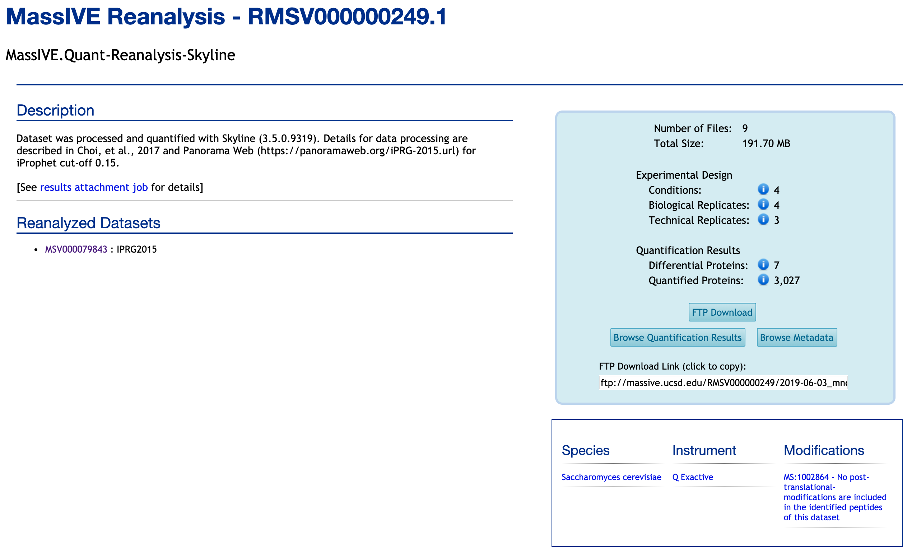
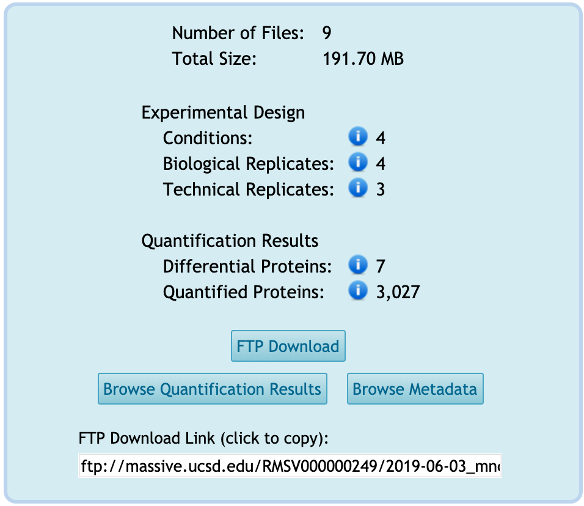

Each reanalysis has its page. Here is the example of one reanalysis, RMSV000000249.1.
Reanalysis page
If you know the reanalysis ID, such as RMSV000000249.1, you can search in the main MassIVE webpage. Also, you can access from either the dataset or the container, for example, MSV000079843 or RMSV000000249, for this reanalysis.

Title
It shows the title that the submitter provided in the Add Reanalysis Results workflow for this reanalysis, 'MassIVE.Quant-Reanalysis-Skyline'.
Description
It shows the description that the submitter wrote in the Add Reanalysis Results workflow.
Reanalyzed Datasets
It shows the datasets reanalyzed for this reanalysis. This reanalysis belongs to this dataset. This reanalysis, RMSV000000249.1, is used the datasets from the data, MSV000079843. If you click the MSV ID, you will move to the dataset webpage.
Summary table for this reanalysis
There is the summary box on the left of this page. It shows the simple summary of experimental design and quantification/statistical analysis for this reanalysis.

-
Experimental Design: The summary of detected experimental design from
Metadatacategory.-
Conditions: Number of distinct conditions analyzed in this reanalysis. Distinct condition labels are counted across all files submitted in the
Metadatacategory having a "Condition" column in this reanalysis. For this reanalysis, there are four conditions from 'annotation.csv' file in theMetadatacategory. -
Biological Replicates: Number of distinct biological replicates in this reanalysis. Distinct replicate labels are counted across all files submitted in the
Metadatacategory having aBioReplicateorReplicatecolumn in this reanalysis. For this reanalysis, there is aBioReplicatecolumn in 'annotation.csv' file. Four unique IDs for biological replicates are available. -
Technical Replicates: Number of distinct technical replicates in this reanalysis. The technical replicate count is defined as the maximum number of times any one distinct combination of condition and biological replicate was analyzed in files submitted in the
Metadatacategory. In the case of fractionated experiments, only the first fraction is considered. For this reanalysis, there is one file, called 'annotation.csv' in theMetadatacategory. Each biological replicate is assigned in one condition. There are three unique IDs of 'Run' for each biological replicate, which are the technical replicates for the corresponding biological replicate.
-
-
Quantification Result: The summary of the result for statistical analysis from
Statistical Analysis of Quantified Analytescategory.-
Differential proteins: Number of distinct proteins found to be differentially abundant in at least one comparison in this reanalysis. A protein is differentially abundant if its change in abundance across conditions is found to be statistically significant with an adjusted p-value <= 0.05 and lists no issues associated with statistical tests for differential abundance. Distinct protein accessions are counted across all files submitted in the
Statistical Analysis of Quantified Analytescategory having aProteincolumn in this reanalysis. For this reanalysis, there is one table for the result of statistical analysis in theStatistical Analysis of Quantified Analytescategory (Choi2017_DDA_Skyline_testResult_byMSstats.csv). In this table, seven proteins are signigicantly different for at least one pairwise comparions. There are 'adj.pvalue' column and 'issue' column. The proteins ('Protein' column) and comparisons ('Label' column) with 'adj.pvalue' <= 0.05 and 'issue' = NA are detected as statistically significant. -
Quantified proteins: Number of distinct proteins quantified in this reanalysis. Distinct protein accessions are counted across all files submitted in the
Statistical Analysis of Quantified Analytescategory having aProteincolumn in this reanalysis. For this reanalysis, 3,027 proteins were quantified and tested by MSstats. The table for the result of statistical analysis in theStatistical Analysis of Quantified Analytescategory (Choi2017_DDA_Skyline_testResult_byMSstats.csv) includes the result for 3,027 proteins.
-
Button : FTP Download
All the submitted files in the reanalysis are available for downloading from FTP. See here for detailed instructions on how to download the files in any category.
Button : Browse Quantification Results
You can browse the quantification results for the reanalysis by clicking on Browse Quantification Results from the reanalysis page. See here for detailed instructions on how to browse the files in the Quantification Result or Statistical Analysis of Quantified Analytes categories.
Button : Browse Metadata
You can browse the metadata for the reanalysis by clicking on Browse Metadata from the reanalysis page. See here for detailed instructions on how to browse the files in the Metadata category.